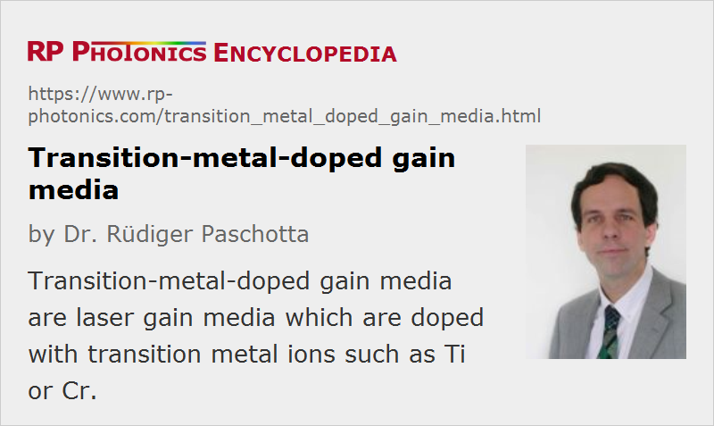

Transition-metal-doped Gain Media
Definition: laser gain media which are doped with transition metal ions
German: Übergangsmetall-Lasermedien
Categories: optical materials, lasers, optical amplifiers
How to cite the article; suggest additional literature
Author: Dr. Rüdiger Paschotta
A number of solid-state laser gain media are doped with transition metal ions, having optical transitions involving the electrons of the 3d shell. Table 1 gives an overview of the most common transition metal ions and their host media.
Table 1: Common transition metal ions and host media.
| Ion | Common host media | Typical emission wavelengths |
|---|---|---|
| titanium (Ti3+) | sapphire | 0.65–1.1 μm |
| divalent chromium (Cr2+) | zinc chalcogenides such as ZnS, ZnSe, and ZnSxSe1−x | 1.9–3.4 μm |
| trivalent chromium (Cr3+) | ruby (Al2O3), alexandrite (BeAl2O4); LiSAF, LiCAF, LiSAF, and similar fluorides | 0.7–0.9 μm |
| tetravalent chromium (Cr4+) | YAG, MgSiO4 (forsterite) and other silicates | 1.1–1.65 μm |
More exotic ions for lasers are cobalt (Co2+), nickel (Ni2+), and iron (Fe2+).
A common property of transition metal ions is that the corresponding absorption and laser transitions have a very broad bandwidth, leading in particular to a very large gain bandwidth. This results from the strong interaction of the electronic transitions with phonons (→ vibronic lasers), which is a kind of homogeneous broadening. Laser-active transition metal ions are basically always used in crystals rather than glasses as host media, since crystals offer a higher thermal conductivity and the additional inhomogeneous broadening from glasses would hardly be useful.
The most important lasers based on transition-metal-doped gain media are titanium–sapphire lasers and various lasers based on chromium-doped gain media such as Cr4+:YAG or Cr3+:LiSAF. Less common are lasers based on media such as Co2+:MgF2, Co2+:ZnF2 and Ni2+:MgF2.
Suppliers
The RP Photonics Buyer's Guide contains 21 suppliers for transition-metal-doped gain media. Among them:
Questions and Comments from Users
Here you can submit questions and comments. As far as they get accepted by the author, they will appear above this paragraph together with the author’s answer. The author will decide on acceptance based on certain criteria. Essentially, the issue must be of sufficiently broad interest.
Please do not enter personal data here; we would otherwise delete it soon. (See also our privacy declaration.) If you wish to receive personal feedback or consultancy from the author, please contact him e.g. via e-mail.
By submitting the information, you give your consent to the potential publication of your inputs on our website according to our rules. (If you later retract your consent, we will delete those inputs.) As your inputs are first reviewed by the author, they may be published with some delay.
Bibliography
| [1] | R. Scheps, “Cr-doped solid-state lasers pumped by visible laser diodes”, Opt. Mater. 1, 1 (1992), doi:10.1016/0925-3467(92)90011-B |
| [2] | E. Sorokin et al., “Ultrabroadband infrared solid-state lasers”, J. Sel. Top. Quantum Electron. 11 (3), 690 (2005), doi:10.1109/JSTQE.2003.850255 (a review mainly concerning Cr2+ and Cr4+ lasers) |
| [3] | S. B. Mirov et al., “Recent progress in transition-metal-doped II–VI mid-IR lasers”, J. Sel. Top. Quantum Electron. 13 (3), 810 (2007), doi:10.1109/JSTQE.2007.896634 |
| [4] | V. V. Fedorov et al., “3.77–5.05-μm tunable solid-state lasers based on Fe2+-doped ZnSe crystals operating at low and room temperatures”, IEEE J. Quantum Electron. 42 (9), 907 (2006), doi:10.1109/JQE.2006.880119 |
See also: chromium-doped gain media, rare-earth-doped gain media, vibronic lasers, titanium–sapphire lasers
and other articles in the categories optical materials, lasers, optical amplifiers
|  |
If you like this page, please share the link with your friends and colleagues, e.g. via social media:
These sharing buttons are implemented in a privacy-friendly way!